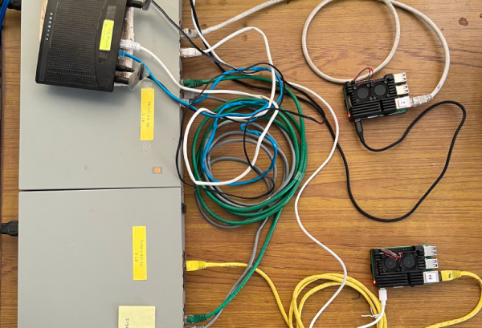
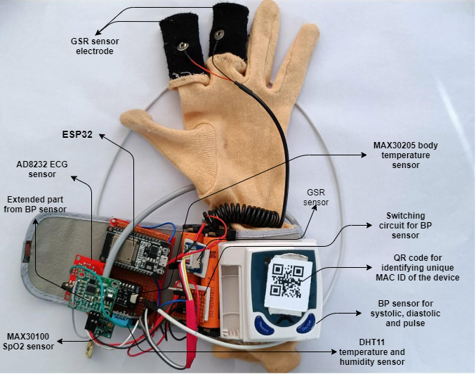
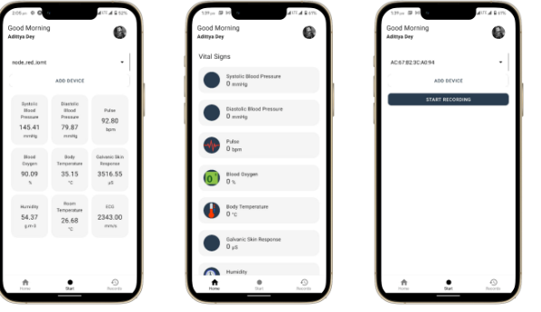
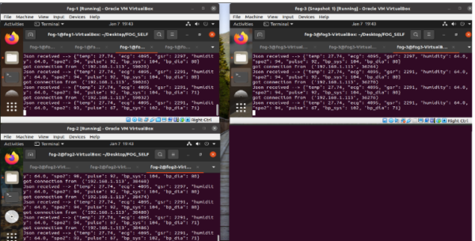

<div class="xl:px-32 md:px-16 px-8  py-8  xl:py-10">
    <div class=" ">
        <div id="1"
            class="bg-[#fff] my-10 rounded-xl px-5 py-5  shadowclass flex lg:justify-between justify-center  lg:flex-nowrap flex-wrap  overflow-hidden">
            <div class="W-72">
                <p class="md:text-3xl text-xl font-bold text-center text-purple-500">Dynamic Network Orchestrator</p>
                <div class="py-3">
                    <div class="my-5 flex flex-col md:gap-4 gap-2">
                        <div><span class="md:font-bold font-semibold md:text-base text-sm ">SDN Pioneer:</span>
                            <span class="text-gray-500 md:text-base text-xs">Dynamic Network Orchestrator leads with
                                groundbreaking Software-Defined Networking innovations.</span>
                        </div>
                        <div><span class="md:font-bold font-semibold md:text-base text-sm ">Agile Adaptability:</span>
                            <span class="text-gray-500 md:text-base text-xs">Swiftly configures networks,
                                adapting to
                                changing demands for optimal performance.</span>
                        </div>
                        <div><span class="md:font-bold font-semibold md:text-base text-sm ">Centralized
                                Efficiency:</span>
                            <span class="text-gray-500 md:text-base text-xs">Orchestrates networks
                                centrally,
                                leveraging automation for streamlined, error-reduced management.</span>
                        </div>
                        <div><span class="md:font-bold font-semibold md:text-base text-sm ">Cybersecurity
                                Sentinel:</span>
                            <span class="text-gray-500 md:text-base text-xs">Fortifies networks with
                                granular
                                access
                                control, advanced threat detection, and responsive mechanisms.</span>
                        </div>
                        <div><span class="md:font-bold font-semibold md:text-base text-sm ">Scalable Performance:</span>
                            <span class="text-gray-500 md:text-base text-xs">Seamlessly scales to meet growing
                                demands, optimizing resources for peak efficiency. </span>
                        </div>
                    </div>
                </div>
            </div>
            <div>
                <div class=" md:h-[300px] md:w-[300px] h-[250px] w-[250px] mx-auto my-auto ">
                </div>
                <p class="mt-2 text-gray-600 font-bold text-center ">Dynamic Network Orchestrator</p>
            </div>
        </div>

        <div id="2"
            class="bg-[#e5e5e5] my-10 rounded-xl px-5 py-5  shadowclass flex lg:justify-between justify-center lg:flex-nowrap flex-wrap  overflow-hidden">
            <div class="W-72">
                <p class="md:text-3xl text-xl font-bold text-center text-purple-500">Smart Cloud Hub</p>
                <div class="py-3">
                    <div class="my-5 flex flex-col md:gap-4 gap-2">
                        <div><span class="md:font-bold font-semibold md:text-base text-sm ">Cloud-Fog Synergy:</span>
                            <span class="text-gray-500 md:text-base text-xs">Smart Cloud Hub pioneers cloud and fog
                                computing synergy,
                                transforming data capabilities.</span>
                        </div>
                        <div><span class="md:font-bold font-semibold md:text-base text-sm ">Data Enhancement: </span>
                            <span class="text-gray-500 md:text-base text-xs">Enhances data processing and storage
                                capabilities through
                                innovative cloud-fog computing integration.</span>
                        </div>
                        <div><span class="md:font-bold font-semibold md:text-base text-sm ">Hub of Innovation:</span>
                            <span class="text-gray-500 md:text-base text-xs">A groundbreaking project, Smart Cloud Hub
                                redefines data
                                management through cutting-edge cloud and fog technologies.</span>
                        </div>
                        <div><span class="md:font-bold font-semibold md:text-base text-sm ">Efficient Processing:</span>
                            <span class="text-gray-500 md:text-base text-xs">Leveraging cloud and fog computing, it
                                achieves efficient data
                                processing and storage.</span>
                        </div>
                        <div><span class="md:font-bold font-semibold md:text-base text-sm ">Next-Gen Data Hub: </span>
                            <span class="text-gray-500 md:text-base text-xs">Smart Cloud Hub is a visionary project
                                advancing data
                                capabilities through cloud-fog collaboration. </span>
                        </div>
                    </div>
                </div>
            </div>
            <div class="">
                <div class=" md:h-[300px] md:w-[300px] h-[250px] w-[250px] mx-auto my-auto "></div>
                <p class="mt-2 text-gray-600 font-bold text-center ">Smart Cloud Hub</p>
            </div>
        </div>
        <div id="3"
            class="bg-[#e5e5e5] my-10 rounded-xl px-5 py-5  shadowclass flex lg:justify-between justify-center lg:flex-nowrap flex-wrap  overflow-hidden">
            <div class="W-72">
                <p class="md:text-3xl text-xl font-bold text-center text-purple-500">Smart Wearable Health Monitor</p>
                <div class="py-3">
                    <div class="my-5 flex flex-col md:gap-4 gap-2">
                        <div><span class="md:font-bold font-semibold md:text-base text-sm ">Health Tracking
                                Innovation:</span>
                            <span class="text-gray-500 md:text-base text-xs">The Smart Wearable Health Monitor pioneers
                                advanced hardware for
                                real-time health monitoring.</span>
                        </div>
                        <div><span class="md:font-bold font-semibold md:text-base text-sm ">Continuous
                                Monitoring:</span>
                            <span class="text-gray-500 md:text-base text-xs">Offers real-time health tracking, ensuring
                                continuous monitoring
                                for comprehensive well-being insights.</span>
                        </div>
                        <div><span class="md:font-bold font-semibold md:text-base text-sm ">Wearable Technology:</span>
                            <span class="text-gray-500 md:text-base text-xs"> Integrates cutting-edge hardware,
                                providing a seamless and
                                user-friendly experience for health-conscious individuals.</span>
                        </div>
                        <div><span class="md:font-bold font-semibold md:text-base text-sm ">Personalized
                                Insights:</span>
                            <span class="text-gray-500 md:text-base text-xs">Delivers personalized health insights based
                                on real-time data,
                                enhancing individual health management.</span>
                        </div>
                        <div><span class="md:font-bold font-semibold md:text-base text-sm ">Innovative Wellness:</span>
                            <span class="text-gray-500 md:text-base text-xs">A transformative wearable project designed
                                to elevate health
                                monitoring standards. </span>
                        </div>
                    </div>
                </div>
            </div>
            <div class="">
                <div class=" md:h-[300px] md:w-[300px] h-[250px] w-[250px] mx-auto my-auto overflow-hidden ">
                    
                    
                </div>
                <p class="mt-2 text-gray-600 font-bold text-center ">Smart Wearable Health Monitor</p>
            </div>

        </div>
    </div>
</div>
<!-- {
    id: '1',
    type: 'SDN',
    title: 'Dynamic Network Orchestrator',
    short_description: `The Dynamic Network Orchestrator is a Software-Defined Networking (SDN) solution that redefines network management.`,
    imagepath: './../../../assets/photos/AT_OVS.png',
  }, -->
<!-- 1. **SDN Pioneer:** Dynamic Network Orchestrator leads with groundbreaking Software-Defined Networking innovations.

2. **Agile Adaptability:** Swiftly configures networks, adapting to changing demands for optimal performance.

3. **Centralized Efficiency:** Orchestrates networks centrally, leveraging automation for streamlined, error-reduced management.

4. **Cybersecurity Sentinel:** Fortifies networks with granular access control, advanced threat detection, and responsive mechanisms.

5. **Scalable Performance:** Seamlessly scales to meet growing demands, optimizing resources for peak efficiency. -->